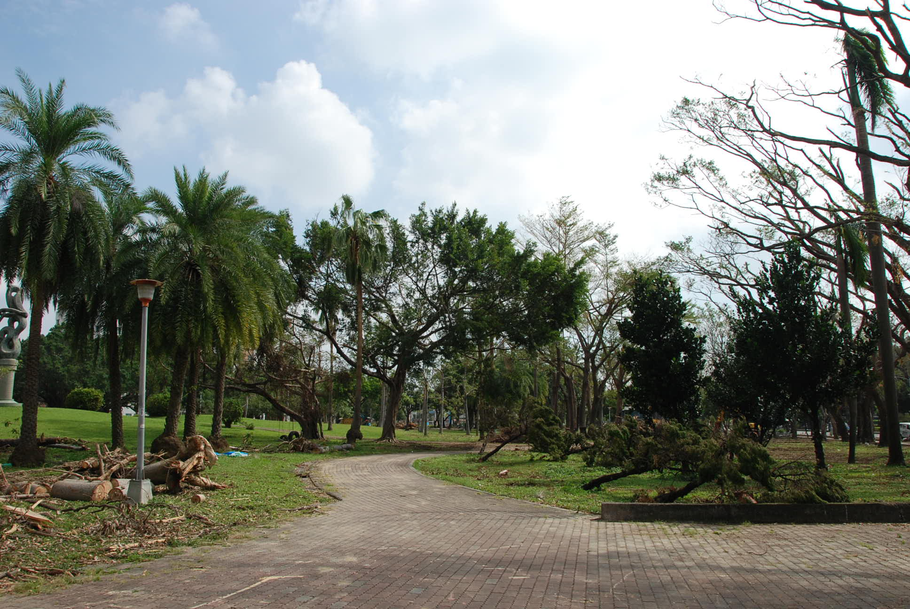
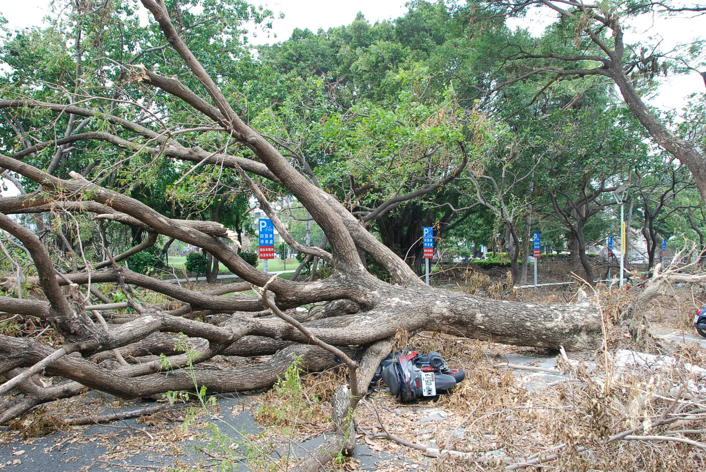
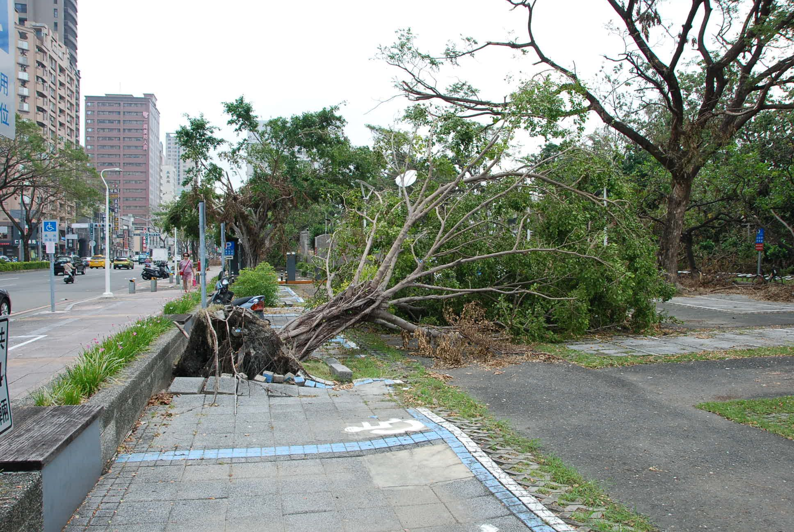
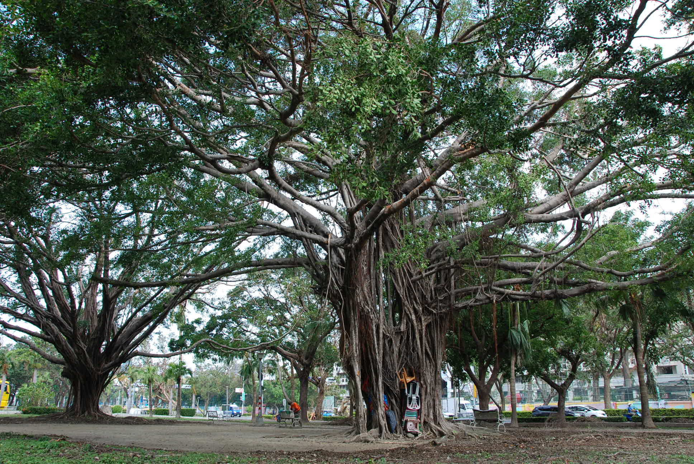

【記者郭謹萱連線報導】3日至5日山陀兒颱風侵台，各縣市路樹倒塌事件頻傳。尤其以登陸地高雄市最為嚴重，多處樹木倒伏阻礙交通，壓毀停於路邊的汽機車，造成嚴重財產損失。專家指出，樹木容易傾倒需重視根部生長環境，並應定期落實樹木健檢，才能增強路樹抵禦風雨的能力。

高雄市中正公園內樹木受強風吹拂傾斜，四處散落斷裂的枝幹。圖／郭謹萱攝
颱風過後，高雄市多處公園內一片狼藉，原本枝繁葉茂的樹木多數傾斜倒伏，人行道上堆滿斷裂的樹枝。根據《倡議家》報導，登陸地高雄市截至7日路樹災情超過2500件，列管的珍貴老樹更有76棵受損、33棵伏倒。森林城市協會理事長暨ISA國際樹藝師莊傑任表示，山陀兒颱風在高雄颳起17級強陣風，倒樹災情嚴重實屬正常。不過除了不可控的自然因素外，若能妥善處理人為因素，可能降低倒樹風險。

行道樹原為城市帶來綠意與遮蔭，如今卻成為危害公共安全的隱憂。圖／郭謹萱攝
行道樹容易倒伏普遍因為樹穴太小，根系發展受限。「就像一棵大樹種在小花盆裡，」嘉義大學森林暨自然資源系助理教授詹明勳說明，「當樹木成熟，就沒辦法承載自身的樹高與龐大的樹冠。」莊傑任觀察到，許多倒樹的根部連同方形土球掀起，顯示根系沒有延展出樹穴範圍，一旦缺乏抓地力便容易連根拔起。「樹根和人一樣需要呼吸」，土壤有良好的透氣性根系才得以生長。此外，也應定期實施樹木健康檢查。莊傑仁指出，美國透過樹木風險評估，即時發現病蟲害或區辨倒伏風險高的樹木，能有效減少突發的斷肢或傾倒。

針對較狹小的樹穴，莊傑任建議安插通氣管或引進國外結構模組的工法，在樹穴底部放置結構骨架，將上層步道與下層土壤架開，讓根系有延展的空間。圖／郭謹萱攝
預防倒樹的關鍵在於例行性樹木健檢，但樹木專業人員不足，導致普查難以到位。根據監察委員王幼玲調查，全國僅11個縣市建立路樹巡檢標準，8個縣市要求執行人員具備專業能力，顯示過半縣市政府尚未建立相關機制。嘉義大學森林暨自然資源系助理教授詹明勳指出，地方工務單位實際負責管理路樹的人，不一定具備森林或園藝專業。莊傑任更說：「樹木管理人員大多僅受修剪訓練，卻缺乏樹木知識的系統性培訓。」

公園內的老榕樹為休憩的民眾撐起一片綠蔭。圖／郭謹萱攝
「人對樹木的依賴與感情都是很重要的。」詹明勳強調。行道樹養護需結合專業與社區力量，期盼營造樹與人和諧共處的城市。去年，農業部林務局已預告《樹木保護專業人員培訓考選及分級認證辦法》草案，相關考選教材尚在研議，盼制度上路後積極培育樹木專業人才。詹明勳呼籲，各縣市政府參考國際標準完善行道樹規範標準外，也應加強社區宣導提升民眾護樹意識，才能避免行道樹成為潛在的危險，真正讓這些與城市共生的生命得到應有的照顧與保護。